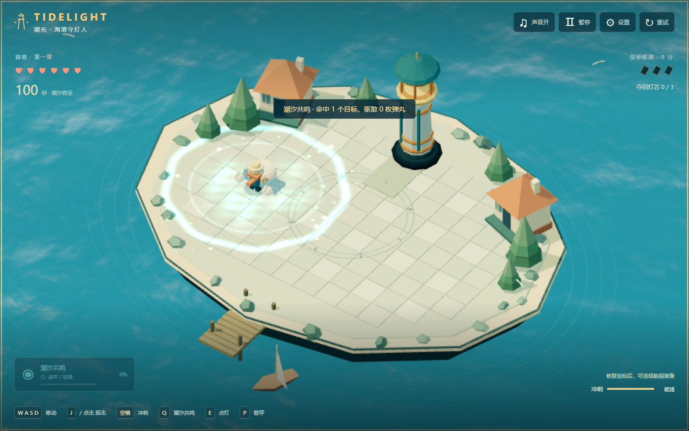
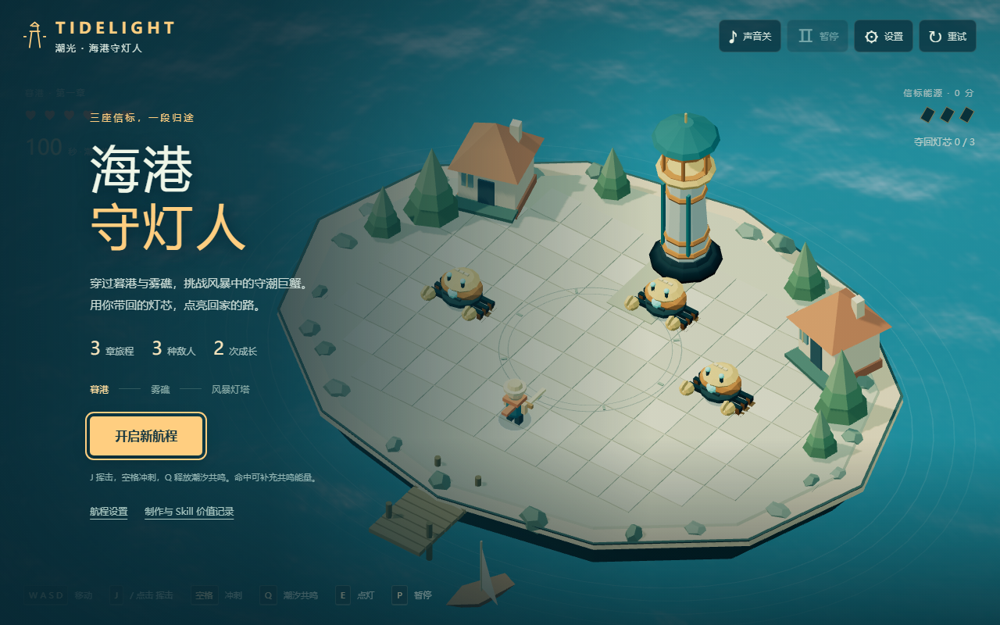
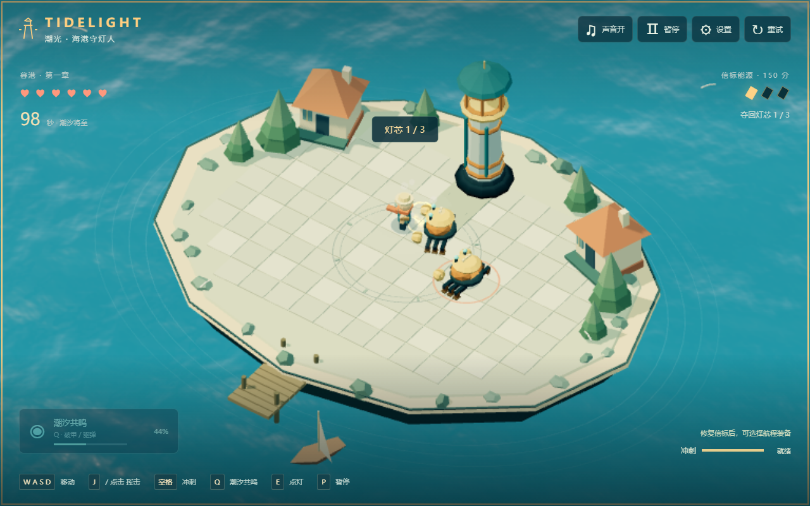
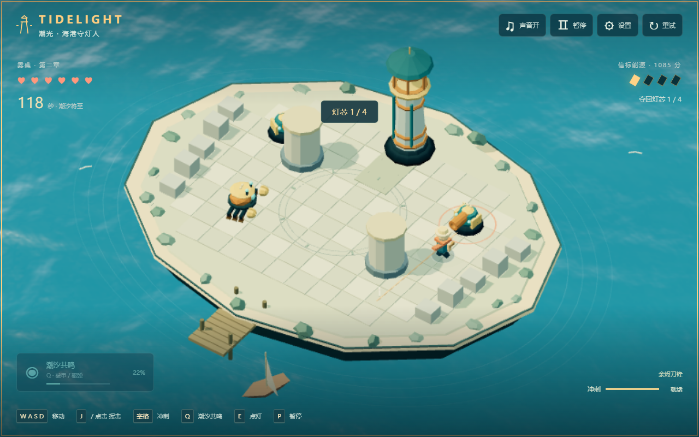
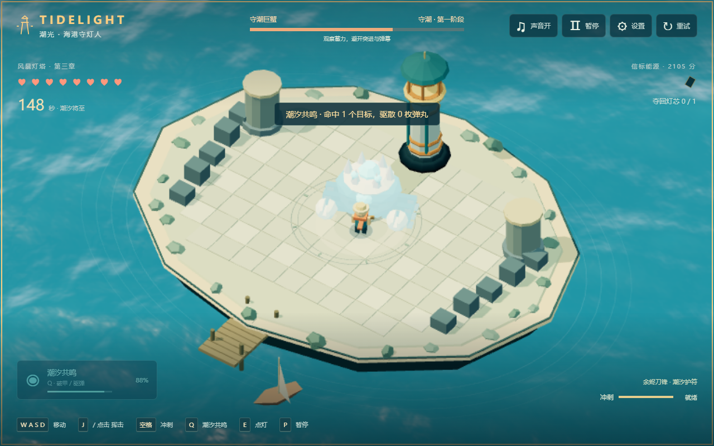
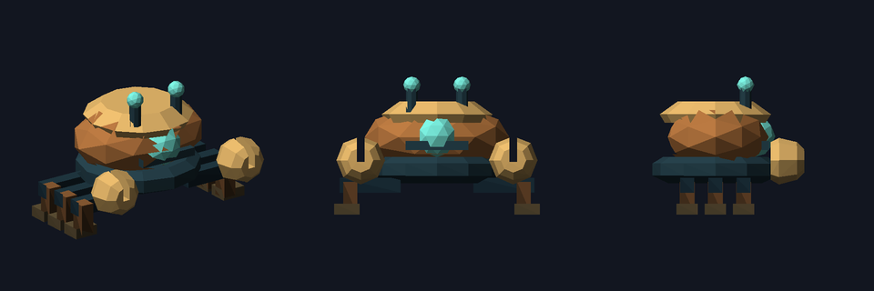
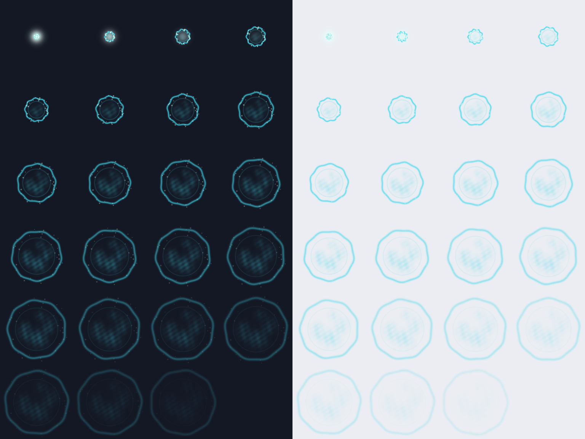

能否进入完整游戏？
目标包含开场、三章挑战、两次成长选择、失败重试、检查点与结局。资源要在实际操作与状态切换中工作。
我们围绕《潮光》做了两轮实践：先采用通用说明完成三章产品，再用四项带工具和代码的 Skill 生产资源、接入海面。现在把研究过程、实际效果、可确认的贡献和未知项放在一起。
已确认资源与代码复用，主要可见效果在视听层。开发更快、返工更少、游戏更好玩的增益尚未证实。
WASD 移动 · J 挥击 · 空格冲刺 · Q 共鸣 · E 点灯
本页是公开研究回顾，未运行的同模型独立对照会明确标记。

总览图使用真实游戏截图和矢量文字排版。网页下方提供完整文字、可玩的版本、原始记录与用法。

研究对象是当前这款 Three.js 浏览器动作游戏。单个案例能说明实际采用过程，不能代表全部游戏开发 Skill。
我们对 Skill 的理解：给 AI 的工作说明，以及可能随附的工具、实现和资源。本次分别核对约束是否采用、代码是否调用、效果是否运行、收益是否测得，避免把四者混为一谈。
目标包含开场、三章挑战、两次成长选择、失败重试、检查点与结局。资源要在实际操作与状态切换中工作。
核对 Skill 原文、配套工具、实际调用符号、生成文件与接入代码，区分上游能力和我们自行开发的部分。
检查重建与规范交付是否成立，再核对开发耗时、返工、运行成本和玩家体验。缺少数据的项目保留为未知。
来自用户提供的清单。原帖的八个 GitHub 原链接未提供，第一轮检索了同名公开版本并保留来源；它们未被当作与原帖完全相同的版本。
采用玩法、引擎、界面、输入、HUD 与反馈六项建议，完成三章产品。功能实现可以核对，但没有证明相较模型直接开发的额外收益；原记录保留“增益未证实、采用必要性低”的判断。
查看第一轮原记录 →实际调用几何、图集、音效管线与海面模块，生成资源并接入游戏。随后补上资产展台、音效试听、同机位版本对照与运行验证。
查看四项采用明细 →实际复用已经发生；视觉和声音优劣仍需体验。Q 和三章产品功能不计入四项 Skill 的独有收益。同模型、同需求对照目前只有协议，没有结果。
查看待验证的对照范围 →保留的是上一版完整三章游戏。场景和产品流程相同，便于检查资源、海面与战斗反馈的变化。
这里是版本前后对照。 旧版没有等量的新资源与 Q 功能，不能据此认定 Skill 优于同一模型直接实现。两组独立对照尚未运行。


完整游戏提供检验接入的载体。以下关卡、成长、存档与菜单是产品实现，未作为四项资源 Skill 的独有价值。

观察蓄力、近身反击、收集三枚灯芯，修复首座信标。

炮台和近战组合，瞄准线提示威胁，掩体能挡住弹丸。

辨认甲壳窗口与收招时机，完成最终信标与结算。
点击图片进入预设章节预览；不写航程存档。完整流程从新航程进入，包含两次装备选择。上图来自正常键盘实玩。

爪口、炮口与灯室使用几何切割，AO 写入顶点色。进入展台可旋转四个 GLB，查看真实几何数量。
旋转查看实际模型 →
闪光、冲击波、烟雾与余烬分层。游戏内由语义事件单次触发，展台支持暂停和逐帧拖动。
查看 24 帧实际特效 →价值来自 Skill 携带的工具、实现和验证约束。模型设计与玩法接入仍由本项目完成，下面分清来源与新增工作。
create-3d-assets遇到的问题：场景对象只有基础几何，缺少轮廓细节和独立资产交付。
实际调用：MeshBuilder、SolidMesh 的 Manifold 布尔运算、旋转体构造、地面 AO 烘焙及网格验证。
这次产物：机械哨兵、首领、炮台、灯塔，共 4 个 GLB；每个少于 1,200 个三角形。镂空、AO 与 Y 轴向上导出可复用。
模型造型与配方由本项目编写；只有整体摆动，没有骨骼动画。导入时额外修正了顶点色的线性色彩空间。
create-vfx遇到的问题：原本只有简单粒子，缺少可辨认的强技能释放形态。
实际调用：EmitterStack 的闪光、冲击波、烟雾、余烬分层；Flipbook 导出与帧间连续性检查。
这次产物：潮汐与金色撞击两套 24 帧透明图集。游戏使用固定 14 个面片的对象池播放，与伤害事件共用触发点。
Q 的破甲、硬直、消弹是新增玩法代码；Skill 提供特效生产工具。减少动态模式改为静帧淡出。
create-sfx遇到的问题：旧版短方波只能提示“有事发生”，事件之间的材质区分较弱。
实际调用：SoundSynthesizer 的金属、玻璃、钟体模态，瞬态包络与立体声空间处理。
这次产物：10 个游戏音效与 1 个旧声对照文件。48kHz 双声道、峰值约 −3dBFS，端点归零；运行时解码后复用。
数值验证能检查格式与削波，听感需试听。旧声文件按原方波参数重建，并匹配峰值，不是旧版录音。
3d-ultra-realistic-water遇到的问题：海港背景原来是单色平面与圆环，水面缺少反光和波动。
实际调用：原配套 ocean.mjs 的 Gerstner 波、细节法线烘焙、菲涅尔反射与泡沫；小船采样同一波函数浮动。
这次产物：动态海面。根据本场景调整尺度与水位，增加独立低分辨率海面通道，保留主体画面清晰度。
比平面海面更耗性能。45% CSS 分辨率、最高 24Hz 更新；本轮未采用原示例的平面镜面反射、尾流与海洋后期。
项目变好，只能说明产生了修改；要判断 Skill 的增益，还要排除新增需求、模型自身能力和普通工程修正。
| 内容 | 可确认的来源或贡献 | 本项目完成 / 仍需验证 |
|---|---|---|
| 模型 | Skill 工具提供几何构造、CSG、AO、导出与验证 | 造型配方、足部调整、线性色彩与游戏替换由项目完成 |
| 特效与声音 | 分层图集与模态合成器提供可调用的生产能力 | 颜色、节奏、音高、事件音量与接入由项目设计；偏好尚未盲评 |
| 动态海面 | 直接复用完整 ocean.mjs 的波场与着色器 | 水位、尺度、光照、分通道缓存与浮动接入由项目适配 |
| Q 潮汐共鸣 | 资源 Skill 用于释放、命中时的视听反馈 | 伤害、破甲、打断、消弹、回充是新增玩法代码，不计为 Skill 自带能力 |
| 三章产品与兼容性 | 第一轮通用建议参与了流程梳理 | 关卡、成长、存档、暂停、焦点、触控与胜负逻辑属于产品实现 |
| 性能、验证与交付 | 资产管线提供格式与结构检查，海面提供现成实现 | 对象池、渲染缓存、浏览器检查、通关程序与展示整理为项目工作；检查通过不等于 Skill 导致更少缺陷 |
已确认的是实际复用和本次交付能力。效率、返工与体验目前缺少同任务对照，不给虚构的提升百分比或质量评分。
四类工具或实现已进入代码调用与运行链路。海面是直接复用完整模块，其余三项提供资产生产函数。
核对实际调用与来源 →有配方、参数、依赖版本与清单；23 个 GLB/WAV/PNG 同 seed 重建后哈希一致。这说明此次产物可重建。
核对重建记录 →既有管线可以继续生成和校验同类资产。但本轮没有测量批量生产、后续改版或多人交接节省了多少工作。
查看可复用配方与约束 →上一轮首次开发没有完整计时，不用 Skill 的同需求版本尚未运行。游戏通关时间和帧时间均不能充当开发耗时。
查看时间口径 →已经观察到 SDK、配色和性能适配中的修正；没有完整返工日志与对照组，无法得出净收益。
查看已知修正 →有实际效果和完整游戏供试玩，但尚无盲评偏好、普通玩家理解、趣味性与长期重玩数据。
自己体验并判断 →测试通过证明相应功能符合这次检查；“使用过 Skill”也不能单独证明优于模型直接实现。本轮判断限于当前四项与当前游戏。
工具能力与 Skill 文档还要分开：实际复用的 SDK 或模块具有可运行能力，但本轮没有证明通过 Skill 文档获取它们，比直接使用相同工具和文档更有价值。不能把工具本身的全部能力算成 Skill 包装的独有收益。
两段均为约 −3dBFS 峰值。音色、时长和响度感受有差别，峰值相同并不等于感知响度相同。
190→45Hz，120ms；复现旧算法的命中声音。
模态共振与短促撞击，保留可辨认的金属衰减。
低频推动、金属共鸣与空气声叠加。
全程录像通过键盘和菜单从新航程完成。操作程序只读取位置与状态，不使用传送、改血或跳关接口。
下表是同视口、同状态的版本运行测量，不是 Skill 与不用 Skill 两组的开发实验。数值不外推到所有设备。
| 1280×800 CSS / SwiftShader | 升级前完整产品 | 资源与海面接入后 |
|---|---|---|
| 标准画质平均帧时间 / DPR 1 | 48.14ms | 47.90ms |
| 自动画质平均帧时间 / 画布比例 0.6 | 21.49ms | 23.23ms，约 43FPS |
| 主通道绘制调用 | 152 次 | 103 次 |
| 海面额外通道 | 无 | 每次更新另加 1 次绘制、8880 三角形；45% CSS 分辨率，最高 24Hz |
各组预热 3 秒、取样 6 秒；Headless Chromium 147 / SwiftShader。标准画质差值很小，不据此宣称加速。主通道统计不含海面独立通道，绘制次数下降不能直接等同于帧率提升。完整条件与原始样本
| 容易混淆的指标 | 当前记录 | 能说明什么 |
|---|---|---|
| Skill 组首次开发总耗时 | 未知，没有可靠完整计时 | 不能回推节省时间 |
| 不用 Skill 的同需求开发 | 尚未运行 | 没有效率胜负 |
| 完整返工次数 | 未形成完整逐次日志 | 已有修正描述不等于可比较的返工统计 |
| 资源重复生成 | 已比较 23 个文件哈希，未记录可比较耗时样本 | 证明这次输出可重建 |
| 完整键盘通关 | 21.48 秒，0 重试，7 次共鸣 | 程序走完游戏流程；不是开发时间或普通玩家时长 |
| 运行帧时间 | 见上表 | 反映软件渲染环境的运行代价 |
以下来自开发过程的已知观察，尚无完整逐次记录，不作为 A/B 返工次数。它们也说明使用工具后仍需检查与适配。
之前已经提出不用 Skill 的对照需求，目前只固定了测试协议；隔离运行方式尚未确定，两组独立实验没有启动。本次页面整理不会把版本升级截图改称为该实验的结果。
可以调用对应工具包与模块，产出同规格的模型、图集、声音和海面，保留所有检查与修正。
同一选定模型与基础依赖，根据相同需求独立实现。若在已有对话里改写，必须标注已读 Skill 的影响。
游戏在浏览器运行，无需 Python。只有重新生成资源才需要下面的独立工具环境。
.runtime/asset-env/Scripts/python.exe -X utf8 asset-recipes/build_models.py
.runtime/asset-env/Scripts/python.exe -X utf8 asset-recipes/build_vfx.py
.runtime/asset-env/Scripts/python.exe -X utf8 asset-recipes/build_audio.py使用 create-vfx 的 EmitterStack 和 Flipbook，做一套青色潮汐冲击波：闪光、扩散、烟雾、余烬四阶段，24 帧、192px、透明边缘。把它接到已有 pulse 事件；不要让特效改动伤害判定。交付生成配方、图集、预览、manifest，并执行结构与动画验证。
要求写明工具、产物、接入点与验收，才能核对 Skill 到底提供了什么。
两轮采用不是同一份结论。原清单八项是选型起点；第二轮另找四项带工具或代码的来源，并固定版本。
实际采用六项通用建议；Unity / Unreal 与 Higgsfield 两项仅收录。原帖原链接未提供，此处是当时检索到的同名公开版本。
| Skill | 原来针对的问题 | 第一轮范围 | 来源与快照 |
|---|---|---|---|
| 读取原清单… | |||
海面模块现已核对为 MIT，许可证随运行时保留。asset-maker 未找到仓库许可证声明，其工具包、复制模板与上游 Skill 全文不随公开包分发；网页提供来源、版本与指纹。生成资源与项目编写的代码、配方保留，详见 THIRD-PARTY-NOTICES.md。
这次能够确认的是：复用了现成几何工具、特效合成器、声学函数和完整海面模块，产物已进入可玩的游戏，并可由配方重新生成。这些工具可用于继续制作同类资源，但重复生产的效率收益尚未量化；海面模块直接提供了可运行的实现。
尚未做相同需求、相同预算下“模型直接实现 / 使用 Skill”的独立实验，因此不宣称提高模型上限或节省了多少时间。造型质量、音效是否耐听和游戏是否好玩，仍需玩家判断。
来源已固定到 commit 并保存 SHA-256。公开包不分发未声明许可的工具包与上游全文；Three.js 与海面模块按 MIT 保留许可。生成图中记录的是发布核验前的研究状态。